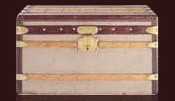

| 루이뷔통 |
| LOUIS VUITTON History | |||
|
|||
| 전설의 탄생 | |||
프랑스의 시골마을에서 태어난 루이비통은 16세에 파리로 상경하게 된다. 이삿짐업체에 취업을 하게 된 미소년은 그곳에서 목공일을 같이 배우게 된다. 당시 이삿짐을 나르는 업체들은 짐을 꾸리기 위해서는 박스를 직접 제작해야 했기 때문에 목공일은 자연스러운 것이었다.
|
|||
| 루이 뷔통의 발전 | |||
이후 루이비통은 파리의 번화가인 뤼 네뷔데 카푸신 4번가에 자신의 이름을 본 딴 가게를 처음 오픈하게 된다. 이때가 바로 1854년으로서 루이비통의 탄생해이다. 루이비통의 명성은 급격하게 퍼져나갔으며 프랑스의 황실 뿐 아니라 윈저공 부부, 어니스트 헤밍웨이, 더글라스 페어뱅크스, 레오폴드 스토코프스키 같은 유명인사들에게도 트렁크를 납품하게 되었다. 이토록 루이비통이 승승장구 할 수 밖에 없었던 이유는 프랑스의 정세와도 무관하지가 않다 나폴레옹1세의 삼촌인 나폴레옹 3세는 집권 후 20년 동안 프랑스의 근대사에 평화와 번영을 구축하는 정치를 하게 된다. 나폴레옹 3세는 산업혁명의 길을 가기로 했다. 국내의 산업을 발전시켜야 제대로된 정치를 할 수 있다라고 판단한 것이다. 황제는 우선 도시 정비 사업을 통해 현재의 파리시내 거리의 틀을 잡았으며 철토개설을 통해 프랑스 자본주의를 크게 발전시켰다. 철도의 발전은 여행의 발전을 가져왔고 남프랑스의 휴양지 문화 또한 같이 발전시켰다. 당시의 트렁크들은 대부분 부피가 컸다. 마차같은곳에 얹어서 운반하는데는 적당했으나 기차나 배로 실어 나르기에는 매우 불편했다. 루이비통은 이런 점에 착안하여 직사각형 모양의 뚜껑이 평평한 가방을 개발하여 인기를 모았다.  여행용 가방이라는 컨셉에 맞게 제품을 개발하여 황실의 권위와 함께 최고의 상품으로 자리매김한 루이비통은 20세기 발전한 철도와 선박의 교통수단에서 가장 유용한 여행용 트렁크와 가방으로 포지셔닝하게 된다. 더욱이 최초로 대서양을 횡단한 찰스 린드버그의 비행에도 동참하여 시대를 여는 역사적인 사건에도 그 이름을 올리게 된다. 그가 만든 가방은 대를 물려 쓸 수 있을 만큼 튼튼했으며 유행을 타지 않는 한결 같은 디자인으로서 전설의 탄생이라는 컨셉에 맞게 발전 할 수 밖에 없었다.
여행과 함께 루이비통의 발전에 영향을 준 것은 앞서도 잠시 언급한 궁중연회였다. 언뜻 생각하기엔 나폴레옹 3세의 황후인 외제니 황후가 사치를 즐기기 위해서 궁중연회를 연 것 처럼 생각할 수 있으나 이것에는 치밀한 정치적 계산이 있었다. 귀족들로 하여금 의무적으로 연회에 참가하게 함으로서 연회에 필요한 물품들의 산업을 활성화하고자 하였다. 단순히 연회의 참석자 뿐만 아니라 귀족을 수행하는 마부나 사제등로 화려하고 사치스런 복장을 갖추어야 했기에 복식 산업의 발전을 꾀하게 된다.
외제니 황후는 그 연회에서 자신이 항상 주인공이 되기를 바랬다. 남들보다 앞선 디자인 그리고 보다 화려한 의상으로 귀족들에게 뽑내고 싶었다. 패션리더로서 그리고 황후라는 권위를 더욱더 나타태고 싶었던 그녀에게 명품산업의 발전을 그 토대를 마련하고 있었던 것이다.
여성복의 발전은 주문형 여성복인 오트쿠튀르의 탄생을 가져 왔고 이를 가장 잘 발전 시킨 사람이 워스이다. 드레스를 장식하기 위한 장신구는 카르티에가, 치장의 끝을 장식하는 향수는 겔랑이 1등 상인이 되어 납품을 하게 된다. 당연히, 그 물품들을 옮기기 위해선 루이비통의 트렁크가 사용되었다.
이렇게 사치산업은 나날이 번성하였고 마침네 봉마르세라는 최초의 백화점이 탄생하게 된다. 더욱기 국가정책으로서의 산업발전을 위해 만국박람회가 개최었다. 1889년 만국박람회에는 에펠탑을 탄생시켰고 또한 루이비통은 내구성이 강하고 무게가 가벼운 새로운 개념의 트렁크를 출시함으로서 기존의 여행용 트렁크의 개념을 완전히 바꾸어 놓았다.
명품의 조건을 만족하기 위해서는 왕실에 납품되면서 만국박람회에서 1등을 하는 것이었는데 루이비통은 그 2가지를 너무도 잘 만족시키고 있었다. 다시 한번 전설이 굳건하게 자리 잡는 계기가 된것이다. |
|||
| 루이 뷔통 대표 상품 | |||
가방, 의류, 쥬얼리, 신발, 선글라스, 시계, 필기구 등의 브랜드. LVMH 그룹이 소유하고 있으며, 본사는 프랑스의 파리에 있습니다. |